Airport Parameter Editing Tool
Project
Rapidlink X
Year
2022
Scope of Work
B2B | IoT | Strategy | Large Stakeholders | Research-driven
Work Type
2022 Eaton UX Design Internship
In 2022, I joined the newly established Human-Centered Design (HCD) department at Eaton APAC as one of the first UX interns. I was entrusted with a high-priority project to develop a ground-up design for a parameter editing IoT product, targeting the global airport markets. This role required me to collaborate with numerous stakeholders across different departments and regions, including the business, product development, sales, and marketing teams throughout the APAC area.
Final application
Over the course of three months, I concentrated on designing Rapidlink X. My efforts involved holding stakeholder meetings, conducting user research, and prototyping solutions. My primary focus was on two key areas: designing a parameter editor for parameter configuration and creating a monitoring system for error detection and correction.
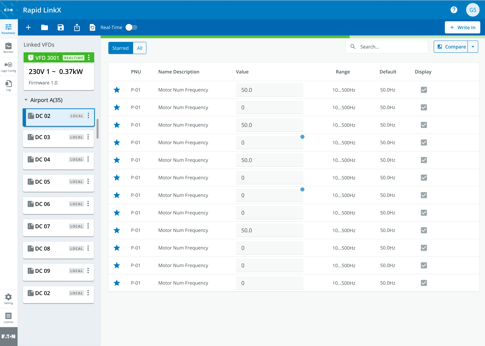
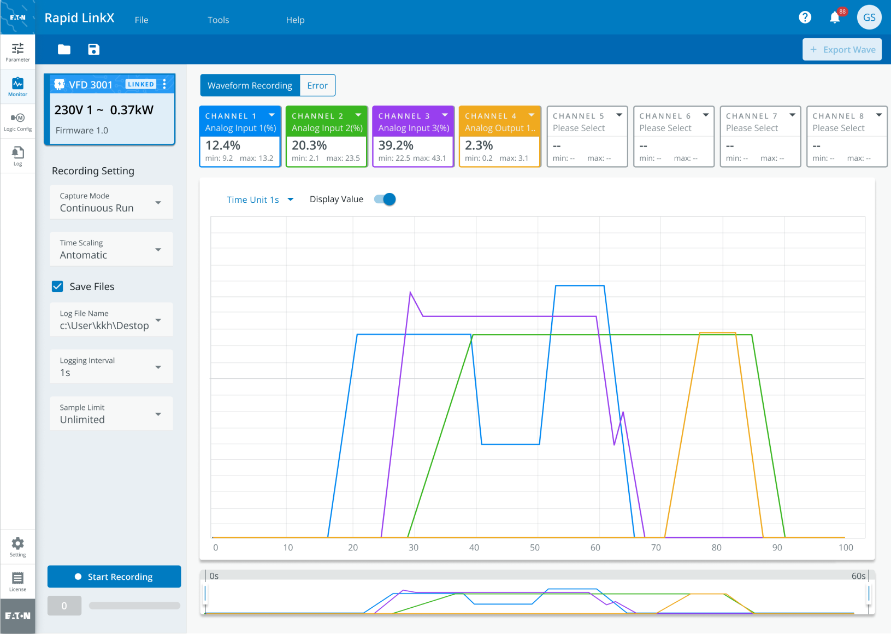
Context
Collaboration Challenge: How might we advance the project within the Complex Collaboration of Eaton Corporation, an global power-management company.
Eaton Corporation, a major player in the energy industry, is modernizing its product experiences by promoting collaboration between its global business departments and its newly founded design dapartment, Studio Blue. At Studio Blue, we act like an internal design consultancy. For this project, although the product team made the request, we had to work with various stakeholders, including an external development team, in-house engineering and market teams, our direct clients, and secondary dealers. This required us to find effective ways to collaborate with diverse teams to move projects forward before starting the design process.
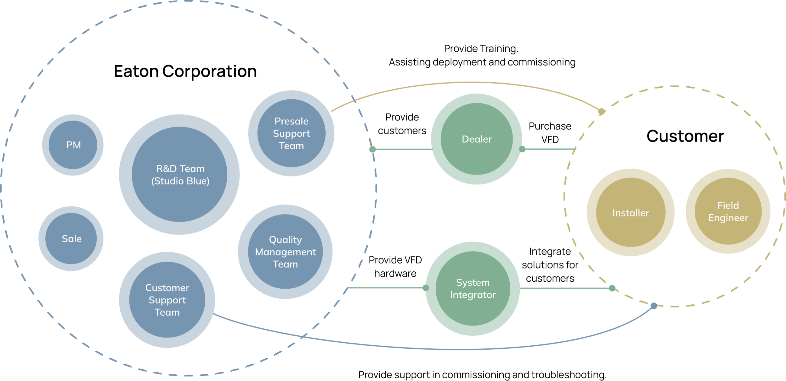
Collaborate with mentor
In this project, I was the primary designer responsible for the day-to-day product design, while my mentor's main role was task planning and cross-team communication. Wanting to gain more experience, I proactively planned my schedule and regularly met with her to discuss progress in collaboration, research, and design. Together, we developed strategies, which I then took the lead in executing.
Cross-Departmental Leadership
To advance our project, we held several design thinking workshops to better engage partners and clients in our design decisions, ensuring they understand every phase from R&D to launch. This approach improves communication across all teams. To make our plan clearer and more memorable, my mentor and I reimagined and redefined the traditional UX journey map, integrating it with our collaborative context and each stakeholder's role, resulting in an organizational chart. Together, we created a work map, similar to a UX journey map, that outlines the entire process and tracks all stakeholder interactions with product and sales elements throughout the product's lifecycle.
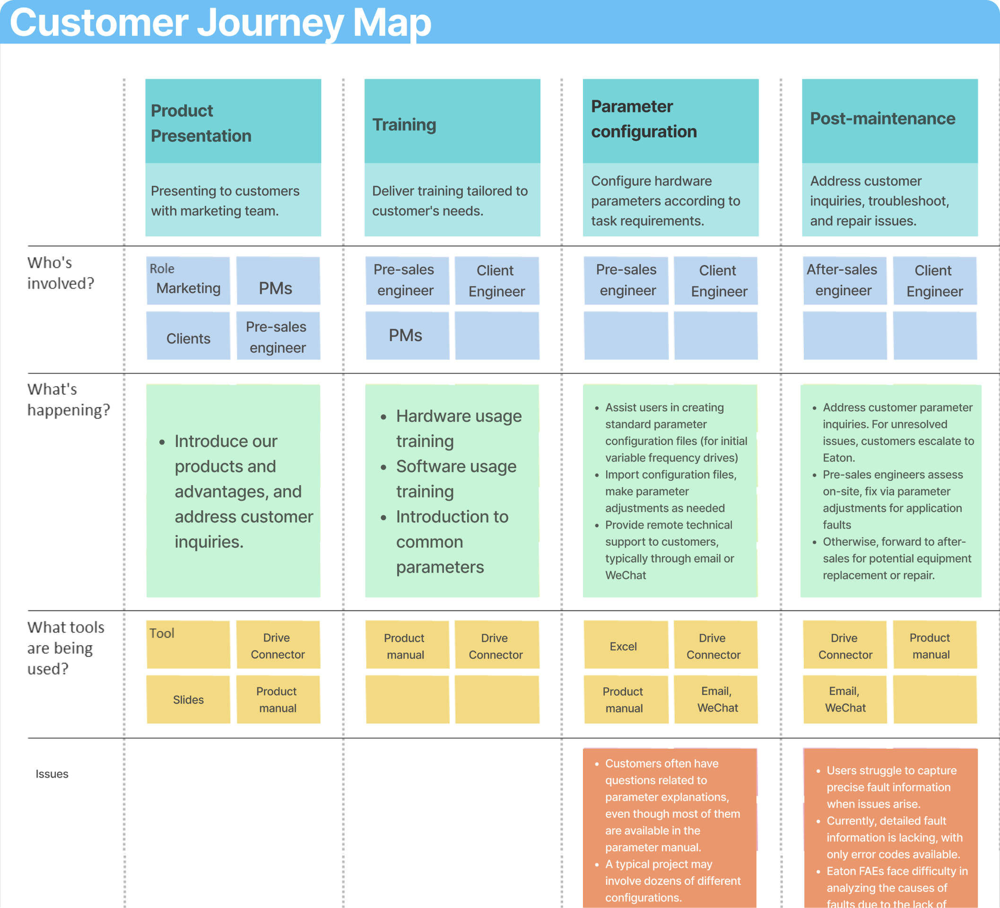
Research with limited resources
In 2020, pandemic restrictions limited our access to experts, so we turned to online secondary research and insights gathered from stakeholders during our workshop to understand our target audience. This effort resulted in the creation of detailed personas that not only guide our design process but also improve internal communication across teams. By leveraging these personas, we ensured that our designs were user-centric and that all teams had a shared understanding of our target audience, fostering better collaboration and more effective decision-making.
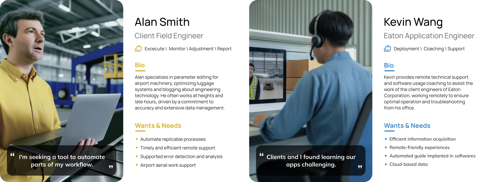
Storyboard for stakeholder communication
As we approached the project's conclusion and prepared for a department-wide presentation, our product manager expressed concerns about the design's transferability across different sections. Recognizing that diagrams might not fully address these concerns, we adopted storyboards for our presentation. This provided a clearer, more universally understandable format for all stakeholders to grasp the UX workflow effectively.
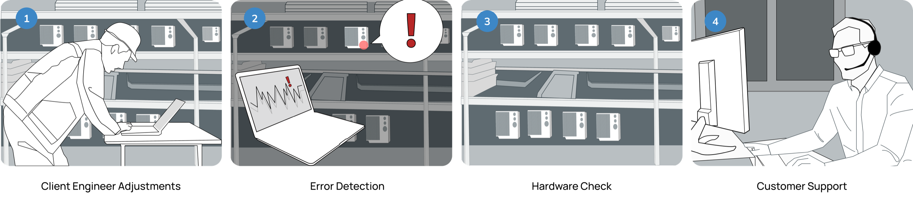
Annotation for Development
In the last 6 weeks of my internship, we collaborated closely with the development team to deliver the designed features and wokflows to them. To address the increased communication needs with contract developers unfamiliar with Eaton's Design System, we established a structured communication protocol. We also introduced an annotation process for phase to improve clarity and facilitate effective communication.
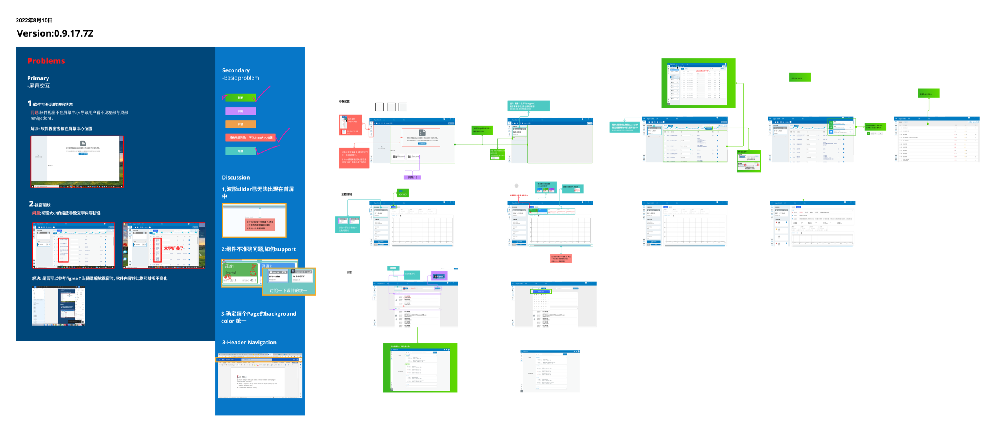
How might we create an intuitive tool that empowers airport engineers to swiftly detect and efficiently resolve hardware issues, minimizing downtime and enhancing operational efficiency?
Context
Design Goal: Create an IoT Dashboard that enables airport engineers to efficiently complete Parameter Settings and Perform Error Checks for airport conveyor system.
Our UX design process progressed in parallel with the hardware design and production. Our scrum workflow included regular weekly or biweekly meetings with the hardware product team to review the design and ensure alignment with hardware updates. To maintain an organized project structure, we prioritized tasks based on the importance of each workflow. More than 60 hi-fi pages were designed during my internship, with 35 selected pages encompassing over 10 distinct workflows.
*Due to our strict NDA policy, I can only showcase the parts of the project that have already been launched in my portfolio.
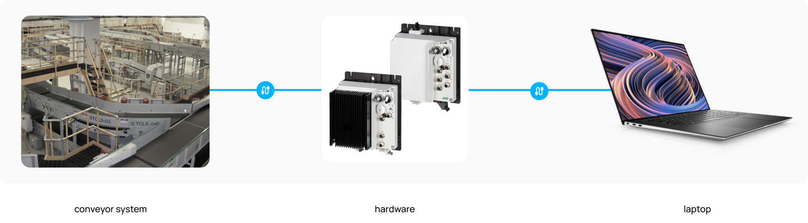
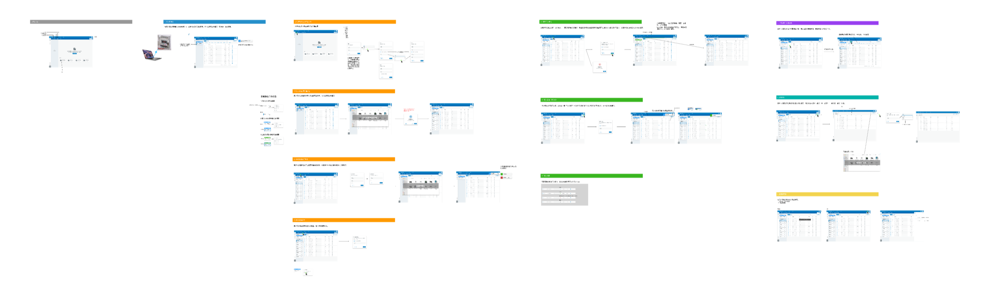
Architecting the core panel
Our design approach begins with the fundamental aspects of page operation, organization, and management. Building on this foundation, we further customize specific components based on Eaton's existing Brightlayer design system to effectively present the desired data.
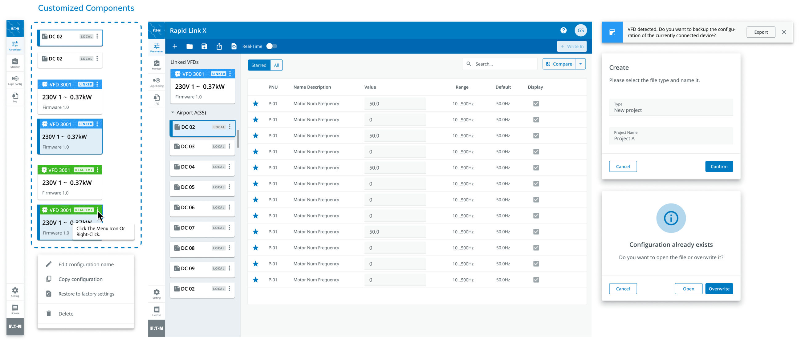
Building the workflow
(write-in)
Our tool offers both manual and automatic login options to cater to various airport engineering scenarios as insights from our expert research. These options enhance operational efficiency and ensure engineers can effectively manage hardware issues in any situation.
Manual logins provide engineers with the control needed for routine maintenance and troubleshooting. For instance, in the event of a sudden hardware malfunction in the baggage handling system, an engineer can use the manual login to swiftly access detailed diagnostics and specific features tailored for troubleshooting, allowing for immediate and precise problem resolution.
Automatic logins facilitate continuous monitoring and automated processes. It is perfect for routine operations like monitoring the entire conveyor system, where it continuously checks for and alerts on any irregularities or potential failures without the need for constant manual intervention.
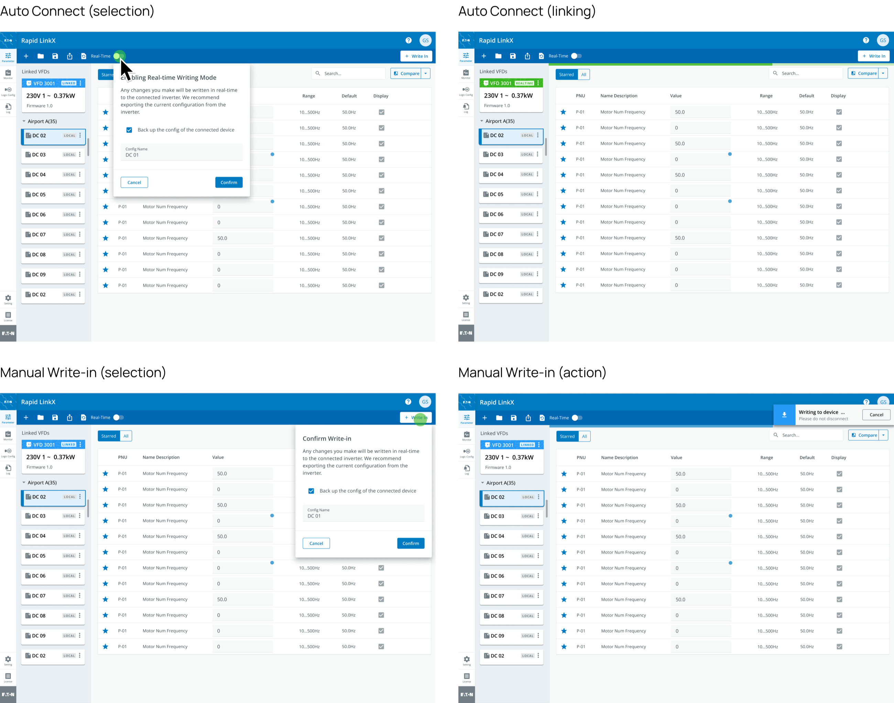
Building the workflow
(support)
We refined several workflows and display modes to streamline user interaction and reduce the steps required for completing parameter settings.
- Empty State: Designed to allow users to easily access their most recent files immediately upon opening the application.
- Routine Options: Enables users to create and save presets of parameters, which can be quickly imported into the device for efficient parameter setting.
- Comparison Mode: Assists users in conducting side-by-side comparisons between past and current datasets, facilitating more effective analysis and solution formulation.
- Favorites: Allows users to highlight and prioritize parameters of greater importance during configuration checks, ensuring critical settings are easily accessible.
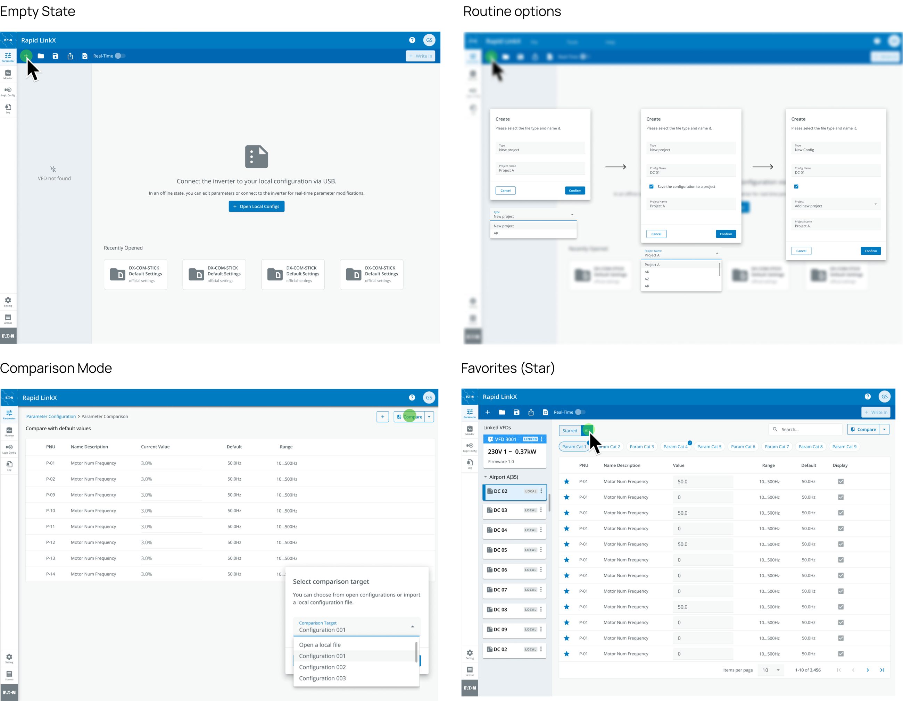
Monitor Feature
Besides adjusting parameters, data monitoring is crucial for engineers to quickly and accurately identify errors for future fixment. Consequently, two design versions were created. Although dark mode offers better readability, the light version was chosen as the final design because it aligns better with the overall design system. Additionally, minor adjustments to the color scheme of the design system were made to enhance readability.
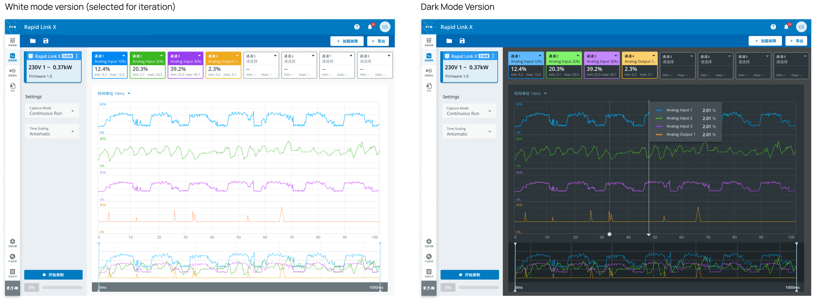
Monitor Workflow
Following the design selections, we shifted our focus towards enhancing functionalities crucial for operational efficiency. This phase involved a meticulous examination of the workflow to identify bottlenecks and areas for improvement. We prioritized features that would streamline processes, reduce manual intervention, and enhance the user experience.
- Error Reports: This feature alerts engineers to system malfunctions or discrepancies, offering detailed breakdowns and potential solutions.
- Empty State: This is activated when no files are present or a new session starts. It is optimized to guide users seamlessly to set their monitored channel.
- Normal View: Provides a standard, real-time overview of system operations, ensuring engineers have a constant pulse on current states and parameters without needing to delve into deeper, more detailed views unnecessarily.
- Recording: Allows engineers to record real-time data flows, enabling detailed reviews and historical analysis. This feature is crucial for backtracking through events leading up to an error or discrepancy.
- Exports: Facilitates the export of data and reports in various formats, making it easy for engineers to share information across departments or with external stakeholders, enhancing collaboration and communication.
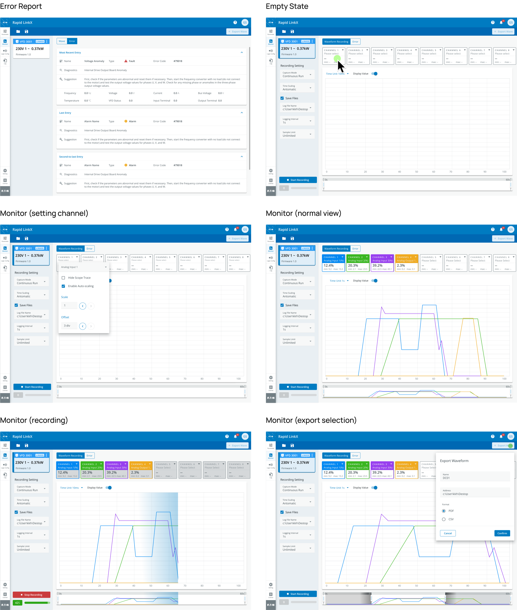
A/B Testing
We conducted extensive A/B testing focusing on two key areas: the parameter editing interface and the monitoring dashboard. For parameter editing, we compared the traditional form-based layout with an interactive, drag-and-drop interface. For monitoring, we contrasted a detailed, text-heavy forma with our graphical, color-coded design. Participants were divided into two groups, each interacting with one version of the tool. We collected data on task completion times, error rates, and user satisfaction through surveys and direct observation.
Here are the insights:
Mobile Exploration
This is our APAC team's first physical project. Since our design team is founded with the aim to digitize Eaton product ecosystem, we tried to maximize our impact in the project. Initially, the project's scope was limited to desktop use due to reliance on USB and hardware connections. However, during the design process, we discovered scenarios requiring high-altitude operations, which is not suitable for only USB-based connection. After extensive discussion with my mentor, and our design manager, I was entrusted to initiate a mobile and Bluetooth-based solution, also considering future cloud data integration. In my final days, I initiated and iterated on the mobile solution, creating prototypes and detailed documentation to support future interns and my mentor's work.
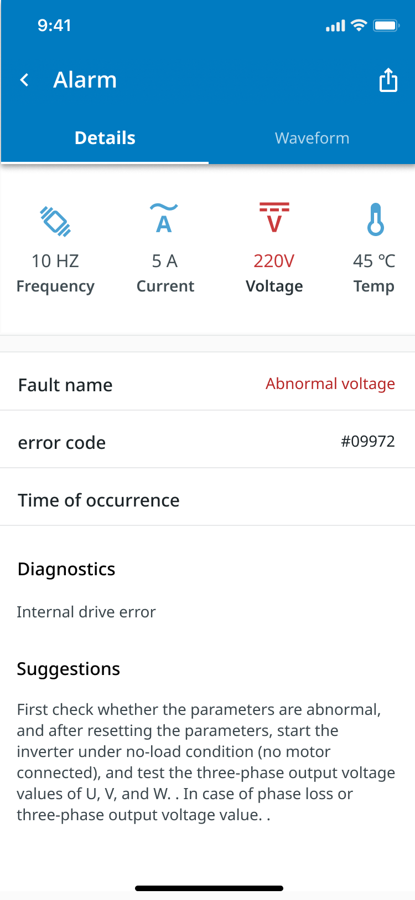
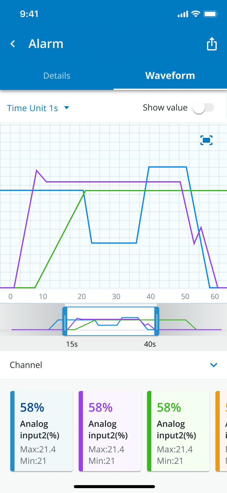
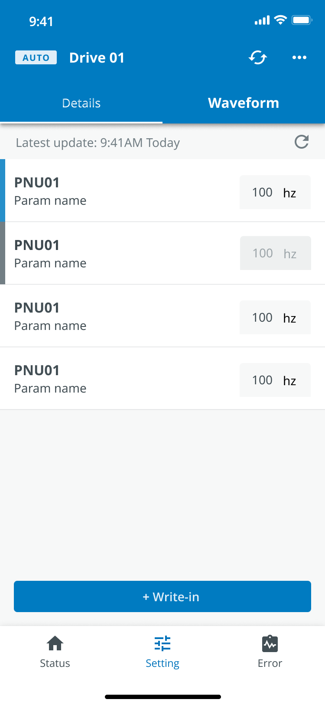
Reflection
As a UX designer at Eaton Corporation, my role extends beyond basic UI and UX craftsmanship to include driving team performance. This involves swiftly analyzing domains, structuring information effectively, and deconstructing workflows. These skills are crucial for delivering specialized, stable, and predictable results. Recognizing their importance has been key to my professional development during my 3-month internship, enabling me to meet complex requirements consistently and with excellence.
Working remotely has further underscored the value of strategic planning, communication, and coordination to maintain onsite levels of efficiency. In this environment, effective design is more about meticulous management than mere hard work, emphasizing productivity. As a UX designer, I am dedicated to meeting my manager's expectations efficiently, keeping my team well-informed, and accessing necessary resources to address design challenges. These practices are essential to my success and reliability as part of the Eaton Corporation team.